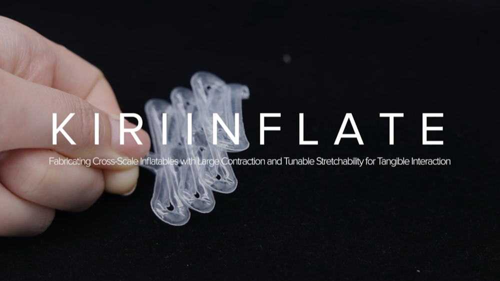

Links
Figma board: https://www.figma.com/design/9OumOzxPk6XzOT9J3mxkpJ/UIST27?node-id=0-1&p=f&t=n41dePmRp35eHEKh-0
Swelling test sheet: https://ywh0rb17miw.feishu.cn/sheets/CNZAs790Dh2jr0t8xkcca9wSn3f
Art-expression Figma section: https://www.figma.com/design/9OumOzxPk6XzOT9J3mxkpJ/UIST27?node-id=8-2&p=f&t=yoObY22GImLuLHvR-0
Related Work
Literature collection and bibliography should be consolidated here as the shared reference base for framing the paper, comparing prior methods, and tracking positioning decisions.
Base Experiments
Foam Engraving Parameter Basics
Current foundational experiments cover material information, swelling-ratio testing, and post-swelling shrinkage testing.

Laser Engraving Parameter Curves
Parameter experiments should continue to map thickness outcomes against different laser-head wattages, power levels, and speed settings.
Challenges and Material Questions
- Material and process limitations still need clearer documentation.
- Bubble-related physical properties impose a lower precision bound.
- Material physics and mechanical behavior still need more explicit characterization.
Design Space
- Material morphology library: single curvature, double curvature, saddle surfaces, and related geometric families.
- Combined engraving and cutting workflows, including the earliest 2D-plus-3D hybrid surface thinking.
- Engraving combined with additional process tricks and constructive strategies.
Design Tools and User Workflow
Tool planning currently includes the education site, calibration workflows, open-device compatibility, and guided design interfaces.
Education Website
The website should present mechanism explanations, design-space references, process guides, and application examples in a way that supports onboarding for different users.
Calibration Workflow
- How to calibrate for different users, materials, swelling ratios, and machine parameters.
- How to support open hardware or device variation through a stable calibration pipeline.
Design Tool
- Example-plus-guidance workflow.
- Interface design and feature implementation.
- Product prototyping tool.
- Creative text and pattern generation tool.
- Free design tool.
Application Progress
- Extra-large scenarios.
- Extra-small scenarios.
- Recoverable dry hot-compression reuse.
- Moisture-retaining use cases.
- Sustainable application directions.